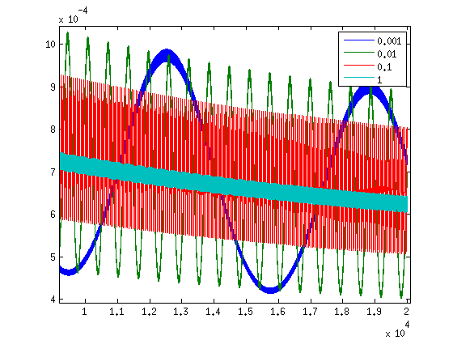
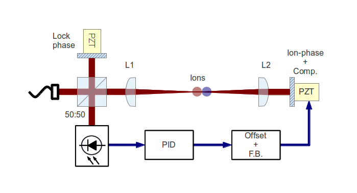
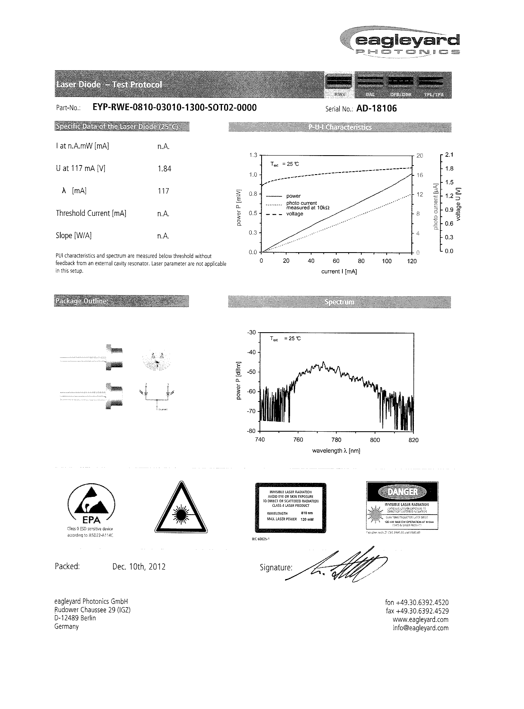
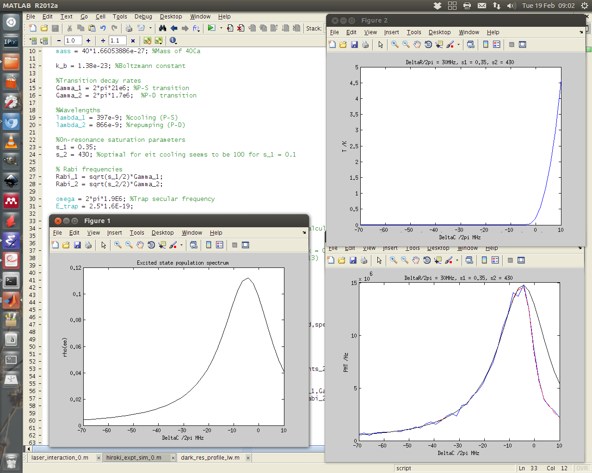
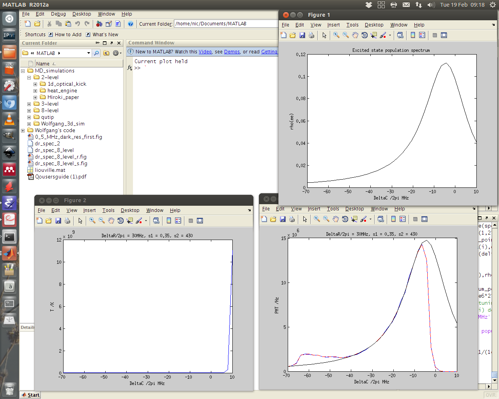

Research notes: February 2013
Table of Contents
- To do
- To do, Molecular Lab Experiments
- To do, General
- "Gantt Project" for project planning
- Fix up Stephen's Toptica PID
- Fix Laura's pulsed-trapping box
- Check for tantalum for ovens
- Look into programming Laura's multiscaler for mass detection
- Purchase list
- Find submissions for ITCM-Sussex.com
- Ask Hiroki for a look at the code for cavity mode prop.
- Oxford group proposal research
- Appendix
Dipole force interferometer
16:32
Completed the single-pass AOM setup, but not coupling to a fibre. The laser polarisation is 90 deg. to the AOM's more efficient axis, so there's a half-waveplate in to correct. The total efficiency into the first order is 67% giving 5 mW out.
Hanle effect - time-dependent magnetic field
09:04
I tried to run Matthias' code overnight to let it calculate dynamics for relatively low frequencies (1E-6 Γ), using the same timesteps as shorter simulations yesterday (10/Γ). I started with the lowest frequency and left it running from about 5pm. The solver error report says it failed right at the end of that first simulation, at around 5:30pm.
The solver error:
reaching tout=1.88891e+06.
SOLVEMC FAILED. CVode failed, flag=-3.
FAIL SOLVEMC failed at Tue Feb 19 17:29:29 2013
CVode failed, flag=-3.
Now I'm not sure what type of error this is (there's no documentation on the command "SOLVEMC" that the solver calls), but it might have something to do with memory. To that end, I'll try again but with shorter lengths of time. The parameters for this were:
tMax = 2000000 N = 200000
which for omega = 1E-6 would have given two cycles. I could either try and cut that down by a factor of two and see what happens, or try to be a bit more clever in general, and save time by making the length of the simulation depend on frequency.
11:28
Re-wrote the simulation to do just what I mentioned above, and ran again. Up to omega = 1E-5 the simulation runs fine, but breaks down again at omega = 1E-6. Interestingly the error code again states that the time it got to is roughly 1.89E+6, indicating that this has something to do with the length of the simulation i.e. a memory problem?
The error:
CVode-- At t=1.89152e+06, mxstep=500 steps taken on this call before reaching tout=1.89153e+06.
SOLVEMC FAILED. CVode failed, flag=-3.
FAIL SOLVEMC failed at Wed Feb 20 11:23:48 2013
CVode failed, flag=-3.
Given that the simulation timesteps have always been way larger than Γ-1, is there any reason that we shouldn't increase the simulation timesteps? I'm not sure what this would get us, since up to omega = 1E-5 we don't see any indication of a change of the dynamics.
Instead I'm going to go for shorter timesteps (< 10 Γ-1). This will limit us to higher frequencies as well, but it's worth a shot in case long timesteps are what's causing us not to see the changing dynamics.
15:09

AC B-field response of excited state of Ca+. Simulation timestep dT = 0.1/Γ. Frequencies in units of /Γ.
Taking shorter timesteps doesn't seem to change the behaviour at the frequencies we've been looking at -but- it does however allow us to look at higher frequencies, on the order of Γ, and at these frequencies we finally see the expected dropoff of amplitude.
It seems that everything slower than 0.1 Γ is not affected by the dynamics of the atom, anything faster begins to be damped it. This can be seen quite clearly in fig. dt0p1: the response curves for 0.001 Γ and 0.01 Γ are approximately the same, and 0.1 Γ and 1 Γ reduce in amplitude.
Changing parameters to wildly different values (power, detuning of both lasers) doesn't seem to affect this characteristic at all. I'm leaning towards the theory that the dropoff we see in the experiment is not due to this effect, or that we have not correctly modelled it.
Dipole force interferometer
17:12
The contrast of the interferometer using the free-space beam directly from the laser is much worse than when we used the fibre. The output mode is not very clean, so this is to be expected. I couldn't fix up the output mode by optimising optical feedback (it was already as good as it will get).
We are likely to need an optical fibre to get the beam from the laser on the stable optics table to the trap, and this will act as a spatial filter. For these reasons I'll couple the laser into a fibre and output it on the same table at the test setup.
Ion spectrum simulation for Hiroki's paper
09:23
So many unknown parameters go towards Hiroki's plot that it's difficult to get a proper simulation.
One of the main things to note however is that according to the simulation, as soon as you get to a decent amount of cooling power, by tuning close enough to line-centre, the fluorescence you get from simulation (and thus experiment?) is very close to the natural linewidth i.e. there's little contribution from Doppler broadening.
Another thing to note is that the lineshape and drop-off is fairly closely dependent on the amount of time per simulation (see fig. Hexpt100us and fig. Hexpt1ms). Since the simulation runs fairly slowly, a tradeoff needs to be found between accuracy and practical-run-time.
Considering, however, that the lineshape is probably well followed by the experiment, then to tackle the criticism from the referee, all we need to do is point out that it is perfectly possible, given certain values of repumper detuning and power, to get a linewidth that doesn't correspond to the natural, power-broadened linewidth of the transition. This is simply down to efficiency of repumping and thus artificial extension of the life-time of the excited state.
Hanle effect - time-dependent magnetic field
09:52
I've taken Matthias' code and cleaned it up a bit to run on my computer. It runs the same and gives the same result: effectively no change in response to B-field frequency between 1E-5 and 1E-2 Hz.
Beam-line preparation
14:27
Alan had the second skimmer finished this morning, so I finished taking apart the beamline. Alan now has the 5-way cross to install the skimmer to.
According to the plan, I'm handing over the rest of the build-up to Kevin. He must be sure to have 6 CF60 (I think) gasketts, an adaptor from CF60 to DN63 (that's the trap connection), and a gaskett for that too.
Ion spectrum simulation for Hiroki's paper
16:23
Hiroki got the referee report back from New J. Phys. and got only a few criticisms from one referee. One of these was that the setup is claimed to be good for spectroscopy, but the linewidth of a spectrum shown does not match the natural linewidth (including power broadening) of Calcium. This seems fairly easily explained by the spectroscopy technique being the imperfect, old technique of scanning over the resonance without cooling periods. Since the trap is no longer up we can't take a proper spectrum, but we can perhaps simulate the system with my program and look for a match that we could use to justify the claim.
I've repurposed my simulation for EIT cooling, which finds the temperature for various detunings of either laser. I simply added a calculation of the average and simulated fluorescence rates to match with the data in the paper.
17:36
I also needed to make sure that the simulation tracked the position and velocity between spectra (not necessary in previous use-case), since starting from cold at each spectrum point is clearly not the experimental circumstance.
On top of that I improved the calculation of temperature which was probably going to be a little off (factor of 2?) since it didn't include the potential energy.
Building dipole force laser
16:30
The laser diode is quoted as having TM polarisation, from what I can tell that means that the polarisation lies along the fast axis. What this means for the Littrow grating is that the diode must lie with the fast axis on the horizontal since (unexpectedly), the efficiency curve is much better for the grating with S-polarisation.
In this arrangement I have managed to set up the laser to have ~40 mA threshold current, but it is at completely the wrong wavelength - 797nm rather than 787 nm. This likely means that I will have to tune far away and have worse optical feedback, if the laser can get to that wavelength at all.
17:19
Laser tuned to 787.475 nm, the required wavelength. It took a fair bit of coarse tuning with the grating, some tuning with the current, and a little fine-tuning with the temperature.
Power is lower than the 100 mW it is rated at with an external cavity, but we are not exactly at the emission peak of the bare diode (took a lot of tuning away from the place with easiest optical feedback). Further, the bare diode is rated at 200 mA, but I'm not sure how high I can run it with an external cavity.
λ = 787.475 nm,
Ith ~ 45 mA,
T = 25.36ˆ C,
I = 77.54 mA,
VPZT = 107 V,
P ~ 10 mW,
Building dipole force laser
The required laser grating angle is too acute (from the norm). I'm having Alan machine away some of the laser mount so that the beam can get past it.
I briefly had the equation for calculating the Littrow condition wrong (forgot the factor of two), so here it is as a reminder:
θ1 = arcsin(λ/2d).
With λ = 780 nm, d = 1/(1200 lines/mm),
θ1 = 28ˆ.
Building dipole force laser
Regarding the 1 mW output power stated in yesterday's notes: That's for the laser without an external cavity, which obviously isn't lasing. Matthias has handed over a document from Eagleyard which includes the data in fig. 780spec and a statement of the expected power with an external cavity, which is quoted as 100 mW @ 200 mA.
SPI library for PIC -> DAC comms.
Model: DAC8568 (16-Bit, 8-channel), datasheet.
Building dipole force laser
The 780 nm laser that will ideally be used for actual state detection of N2 has been put together. The temperature sensor and peltier element work nicely, and I will test the diode itself tomorrow. The controller pin assignments (fig. currctrl, fig. tempctrl, and table conn915) and laser spec-sheet (fig. 780spec) are included in this document. N.B. The max output power of the laser is roughly 1 mW at 170 mA, which seems quite low.
| 9-pin | 15-pin |
|---|---|
| 1 | 1 |
| 2 | 4 |
| 3 | 3 |
| 4 | 2,5,6 |
| 5 | 9,13,14 |
| 6 | NC |
| 7 | 10 |
| 8 | 8 |
| 9 | 11 |
Dipole force laser setup

Schematic of the dipole-force laser interferometer
Dipole force laser has been set up nearly as shown in the diagram above. Only the lock-phase PZT-mounted mirror (top) is not yet installed. This will allow us to change the phase of the standing-wave at the ion using the compensation PZT (right), while compensating for the resulting change in the phase at the interferometer. This is essential to maintaining the optimal slope of the error signal at the interferometer i.e. we must be half-way up an interference fringe for optimal sensitivity to changes in path length.
I managed to extract a decent interferometry signal from the setup using a spare arm of the 866 laser, but that is now being used for another experiment, so I might as well build the laser that will be used in the ultimate setup.
New DAC for SCL
Matthias is making the boards, I think it'll just be up to me to program the whole thing.
Check with Matthias that his design has incorporated these pins as I/Os:
- Port D: RD8 (peak detect input), RD5 (CN_interrupt)
- U2RX pins, unless he's already designed these away
Dipole force laser setup
If all we require is AM beam, then we can use a single-pass AOM to do the job.
Since we're not concerned about whether we modulate one beam, or both, we can modulate the beam before splitting it, and then recombine at the ion to give us our modulated standing wave.
The simplest way to achieve this is by retro-reflecting the incoming beam with a mirror mounted on a PZT (for phase compensation), and overlapping the reflection using the optical fibre. An interferometer can be placed as close as possible to the trap in order to monitor/lock the phase in conjunction with the PZT.
To do
To do, Molecular Lab Experiments
DONE Beam-line preparation Nic Kevin
- CNCL Second TMP installation
Data in previous headline indicates there's not enough pumping power and the ion trap region in the beamline chamber. It's time to consider adding a turbo to pump alongside the ion pump to maintain a good pressure differential between the beamline and the trapping region.
Matthias has ordered the parts, but we are trying a setup that may not require them first (see entry on preliminary N2 chamber)
We're going ahead without this, just using a prechamber as described in January's notes.
- DONE Take apart beamline
- Alan needs the 5-way cross
- Alan now has the second skimmer built, and I've taken the 5-way cross out for him and handed it over.
- DONE Check for all the parts
Need 6 CF60 (?) gasketts and an adapter from CF60 to DN63.
- Hand over the rest to Kevin
TODO Dipole force laser setup Nic
- DONE AM setup
- DONE New laser
Set up and lasing at correct wavelength. Power is lower than the 100 mW it is rated at with an external cavity, but we are not exactly at the emission peak of the bare diode (took a lot of tuning away from the place with easiest optical feedback). Further, the bare diode is rated at 200 mA, but I'm not sure how high I can run it with an external cavity.
λ = 787.475 nm,
Ith ~ 45 mA,
T = 25.36ˆ C,
I = 77.54 mA,
VPZT = 107 V,
P ~ 10 mW,
- TODO Single-pass AOM and optical fibre
- Set up on the test table.
- TODO Feedback setup
DONE Time-varying B-field ion simulation Nic Kevin
- DONE Matthias' code
- Compare Matthias' approach with my own
- Virtually identical apart from the solver, which is the correct, time-dependent approach.
- DONE Modifications
- Frequencies around Γ show a dropoff, but that's much higher than what we see. Need new ideas as to the source of the attenuation.
TODO Work on DACs for the new SCL Nic Kevin
- TODO Building boards
- Matthias has the plans:
Pester him for them.
- Received:
Matthias sent them ages ago, but I didn't spot them in my mail. He's still yet to order the actual DACs though, so there's still time. I could make the boards however, in preparation.
- Matthias is making the boards:
Matthias is making the boards, I think it'll just be up to me to program the whole thing.
- Pins used:
Check with Matthias that his design has incorporated these pins as I/Os:
- Port D: RD8 (peak detect input), RD5 (CNinterrupt)
- U2RX pins, unless he's already designed these away
- TODO Programming
- TODO Write SPI library for PIC comms with computer
- TODO Write SPI library for PIC comms with DAC
- TODO Write SPI library for PIC comms with computer
TODO Code an automation program for experiments Nic Kevin
- TODO Contact FAST ComTec
About the issue with having to communicate with the card via the server.
- TODO Fix datasocket bug
- TODO Flow chart for experimental sequence
TODO Look up literature for PI of N2 Amy Nic
- Wavelength and Isat
To do, General
DONE "Gantt Project" for project planning
- Installed.
DONE Fix up Stephen's Toptica PID
- More unstable that I remember, tune up.
- I gave a go to tuning it up but no luck. Might need a closer look, but will ask Matthias to have a gander first.
TODO Fix Laura's pulsed-trapping box
TODO Check for tantalum for ovens
TODO Look into programming Laura's multiscaler for mass detection
Purchase list
- RS/Farnell
- Thorlabs
[X]Bits for new lasers (N2 state-detection | Delivered
- Sci-tech stores
- Miscellaneous
- Returns
Find submissions for ITCM-Sussex.com
Matthias has reminded us to look through the old website for these.
I should add a scanning cavity lock section to the "Technology" page of the site (extended abstract?).
Furthermore, I think it'd be nice to look over the diagrams that are on there already, and think about whether or not I could make some improved ones in POVRAY.
Rev. Sci. Instrum. 81, 075109 2010:
"We have implemented a compact setup for long-term laser frequency stabilization. Light from a stable reference laser and several slave lasers is coupled into a confocal Fabry–Pérot resonator. By stabilizing the position of the transmission peaks of the slave lasers relative to successive peaks of the master laser as the length of the cavity is scanned over one free spectral range, the long-term stability of the master laser is transferred to the slave lasers.
By using fast analog peak detection and low-latency microcontroller-based digital feedback, with a scanning frequency of 3 kHz, we obtain a feedback bandwidth of 380 Hz and a relative stability of better than 10 kHz at timescales longer than 1 s."
Current undergraduate/masters projects are focused on implementing our scanning cavity lock design with a cheap and feature-rich microcontroller from the dsPIC line (http://www.microchip.com/). Automated impulse-response-function analysis and digital filter generation will provide significant improvements to bandwidth and stability.
- Comments on current webpage:
- There are no sub-titles at the lowest level of the pages when looking at the research interests. e.g. "ion-photon entanglement" is a page inside "cavity-QED", but when you click on it it is title only "cavity-QED".
- Only "charge exchange reactions" in the molecular physics section. Should we show something about our research direction?
- Can we add references to our papers in the "crystal weighing" and "optical excitation" sections?
Ask Hiroki for a look at the code for cavity mode prop.
Asked Hiroki, but he hasn't finished it yet.
Oxford group proposal research
-
- Drewsen group BBR assisted cooling
- Previous ammonia research
- Ammonia level structure for state-detection
-
- Drewsen and Schiller both have papers on BBR according to the proposal.
- Drewsen proposal uses Raman transitions, requiring narrow/stable lasers - does this apply to our system?
E-mail Brianna to assess the status of the Stark decelerator.
- General:
Look closer at the reactions that are proposed to investigate in the proposal, and make sure that there are going to be setups for those experiments, or ones to do with our research here, at Oxford.
- Reactions -> Deuterium fractionation:
Reactions involving H atom transfer to ionic species e.g.:
Ca^+ + HD0 -> CaH^+(CaD^+) + OD(H) Nd_3^+ + HDO -> ND_4^+(ND_3H^+) + OH(OD)
Addition reactions with H atom elimination (e.g. in proposal), and Near-thermoneutral charge transfer reactions (e.g. at link).
- Experimental:
In-situ measurement of masses and numbers of reactants and products -> Monitor sequential isotopic exchange.
Quantum-state selected reactants from stark decelerator (neutrals) and REMPI (ions). Thermal redistribution of ions monitored by non-destructive state-detection.
Control internal states using BBR assisted schemes (see nphys1604 and nphys1605).
Appendix

Laser spec sheet (1 mW @ 170 mA, AR coated, 780 nm).

Hiroki's experiment simulation 100 us per data point

Hiroki's experiment simulation 1 ms per data point. Note heating at far detuning and faster drop-off.